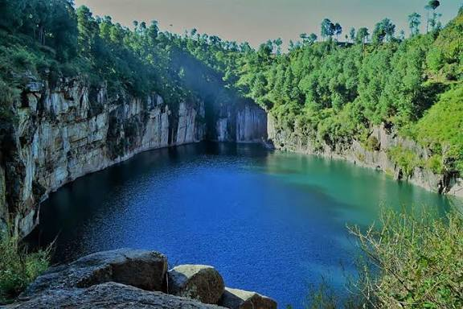
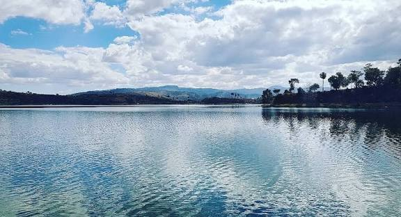
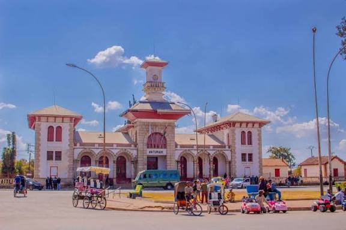
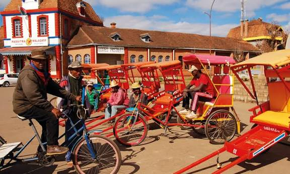

Vakinankaratra Excellence
Au Cœur de la Ville d'Eau
MSD unit la foi, le leadership et la culture d'Antsirabe pour forger une jeunesse rayonnante et engagée.
Rejoindre le MouvementAntsirabe : Notre Héritage

Le Lac Tritriva
Lac volcanique mystérieux dont la forme rappelle Madagascar, berceau de légendes sacrées.

Le Lac Andraikiba
Un miroir d'eau paisible, ancien joyau de détente et témoin de l'histoire de la ville.

L'Hôtel de Ville
Monument emblématique de l'architecture coloniale, cœur administratif et fierté d'Antsirabe.

Le Pousse-Pousse
Symbole vivant et coloré des rues d'Antsirabe, représentant le courage des artisans locaux.